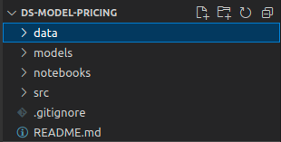
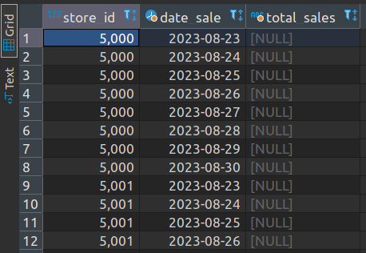

APS 02
In this assignment, we are going to create a new version of the work from the last class (Click!).
What will change?!
All data will be read and written from PostgreSQL.
Before starting
Accept assignment
All assignments delivery will be made using Git repositories. Access the link below to accept the invitation and start working on the second assignment.
Configure assignment repository
You must ensure that the repository has the required folder structure. Create by hand or use your template and then link to the assignment repository.

TASK 0: Create analytical table
In DBeaver, try to create a SQL query that performs the necessary transformations in the data of the item_sale table, so that they are grouped and with the necessary fields for model training, as in the last class.
| store_id | total_sales | year | month | day | weekday | |
|---|---|---|---|---|---|---|
| 0 | 5000 | 62895.6 | 2023 | 1 | 1 | 6 |
| 1 | 5000 | 42351.1 | 2023 | 1 | 2 | 0 |
| ... | ||||||
| 1636 | 5005 | 46246.3 | 2023 | 9 | 29 | 4 |
Tip! 1
Start with a simple query like:
Then make the necessary adjustments.
Tip! 2
At first, use fixed dates, for example, assuming your model will use data from 2023-06-01 to 2023-06-30.
Attention
Notice that the query must do all necessary transformations on the data.
Question 1
Important!
Now "today" cannot be fixed in the query anymore, google for CURRENT_DATE + postgres and make the necessary adjustments!
TASK 1: Query file for analytical table
We will no longer have CSV in the data folder!
Question 2
Question 3
Question 4
Info
Search how to:
- Create a PostgreSQL database connection in Python.
- How to read a Pandas DataFrame from a query and connection.
For now...
For now, keep saving and reading the model in the models folder!
Question 5
TASK 2: Exporting predictions
The way data predicted by the model are saved depends a lot on how the model is used.
In this activity, let's assume that:
- The model always makes predictions from the current day to the next six days.
- The predictions are stored in another
schemacalledsales_analytics. - Old predictions are not stored. Whichever prediction script is run, the table that stores predictions should be cleared and only the predictions for the day through the next week should be kept in the table.
Challenge
Try to create a query that generates a table with all the days and fields needed for prediction:

Then, save these lines in a new table "scoring_ml_YOUR_INSPER_USERNAME" on schema sales_analytics. In Python, iterate over these records calling and storing your model's predictions!
Remember to delete old records from this table every time you make predictions.
Question 6
TASK 3: A new View!
Let's pass the code from data/train.sql to a view on the database.
Question 7
Question 8
Submit the activity by the deadline!